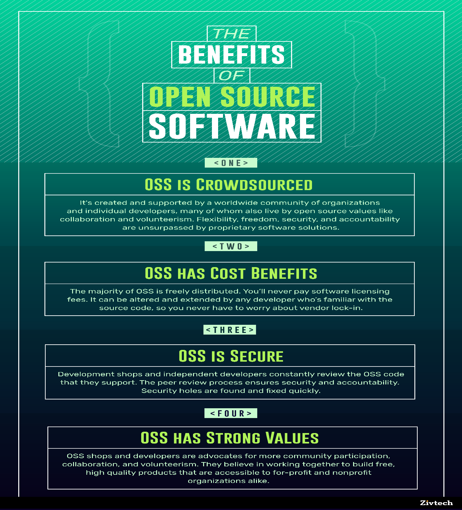

The Benefits of Open Source Software
3 January, 2020

Open-source software (OSS) dictates that the source code of an open-source project is publicly accessible, and may be redistributed and modified by a community of developers.
Open source projects embrace strong values of community, collaboration, and transparency, for the mutual benefit of the platform and its users. This commitment to community pushes developers to constantly contribute new features and to ensure old ones perform properly. As a result, popular OSS projects are often on the cutting edge of technology.
Several generations of Raspberry Pi have been released. The first generation christened Raspberry Pi 1 was released in February 2012 with its basic Model A and a higher specification Model B. Its later released an improved A+ and B+ models. With some upgrades, Raspberry Pi 2 was released in February 2015 and then Raspberry Pi 3 in February 2016. These boards are priced between US $20 and 35 and since 2012, millions of people have used a Raspberry Pi to get their first experience of programming, but then still there were many people for whom cost remains a barrier to entry. At the start of this year,the company started to work on addressing this issue and an even cheaper Raspberry Pi Zero was released to help these people take the plunge. It is smaller in size and has limited input/output (I/O), general-purpose input/output (GPIO) abilities for just US $5.
The open exchange of information is fundamental to open source projects and allows them to be more cost-effective, flexible, and secure.
COST
The majority of OSS is distributed freely, making it very cost-effective. Unlike closed proprietary software, OSS can be altered and extended by any developer familiar with the source code. This grants organizations freedom from “vendor lock-in,” where they must rely upon a single vendor for updates to their product.
OSS offers long-term viability because hundreds of developers supporting a widely adopted OSS project can be called upon long into the future.
FLEXIBILITY
Proprietary software often requires users to accept the terms and conditions of use, which restrict the ways in which developers and programmers can utilize a given product. However, with OSS, community members have open access to the source code and are able to use it in any way they see fit.
OSS offers long-term viability because hundreds of developers supporting a widely adopted OSS project can be called upon long into the futureFreedom with the source code allows developers to create unique solutions, which can then be built upon by other members of the community. This process of crowdsourcing allows for development shops to pull beyond the talents of their teams, and access a repository of information compiled by the community at large.
SECURITY AND TRANSPARENCY
Crowdsourcing also facilitates a constant process of peer review. Without proprietary software restrictions, developers in the open-source community are constantly reviewing code, building improvements, and closing gaps in security. This process also holds community members accountable for their contributions, and cuts down on the time it takes to push out an update.
OSS is built upon a talented pool of developers that value community and the open exchange of information. The open-source community is committed to updating and enhancing OSS so that it empowers developers with the flexibility and freedom to create more valuable projects.

Learn more about open source software: